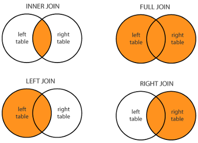

Chapter 5 Data wrangling with Tidy data
5.1 Datasets within DepMap Project
The Dependency Map project is a multi-omics profiling of cancer cell lines combined with functional assays such as CRISPR and drug sensitivity to help identify cancer vulnerabilities and drug targets. Here are some of the data that we have public access.
Metadata
Somatic mutations
Gene expression
Drug sensitivity
CRISPR knockout
and more…
5.2 Data Science Workflow

We are now equipped with enough fundamental programming skills to apply it to various steps in the data science workflow. We start with Transform and Visualize with the assumption that our data is in a nice, “tidy format”. First, we need to understand what it means for a data to be “tidy”.
5.3 Describing a tidy dataset
Here, we describe a standard of organizing data. It is important to have standards, as it facilitates a consistent way of thinking about data organization and building tools (functions) that make use of that standard. The principles of tidy data, developed by Hadley Wickham:
Each variable must have its own column.
Each observation must have its own row.
Each value must have its own cell.
If you want to be technical about what variables and observations are, Hadley Wickham describes:
A variable contains all values that measure the same underlying attribute (like height, temperature, duration) across units. An observation contains all values measured on the same unit (like a person, or a day, or a race) across attributes.

A tidy dataframe.
5.3.1 Examples of Tidy data
Let’s practice describing the observations, variables, and values of tidy dataframes:
library(tidyverse)## Warning: package 'tidyverse' was built under R version 4.0.3## Warning: package 'purrr' was built under R version 4.0.5## Warning: package 'stringr' was built under R version 4.0.3library(palmerpenguins)
load(url("https://github.com/caalo/Intro_to_R/raw/main/classroom_data/CCLE.RData"))| Dataframe | The observation is | Some variables are | Some values are |
|---|---|---|---|
| metadata | Cell line | ModelID, Age, OncotreeLineage | “ACH-000001”, 60, “Myeloid” |
| expression | |||
| mutation | |||
| penguins | |||
| table1 |
5.4 Transform
When given a tidy dataset, we often still have to do some transformations on it to get it in a form so that we can perforom our analysis and visualization. Here are some common transformation tasks:
5.4.1 “The rows and columns I need can be subsetted from the dataframe.”
We use filter() and select() as we have learned already.
breast_metadata = metadata %>% filter(OncotreeLineage == "Breast") %>%
select(ModelID, Age, Sex)5.4.2 “The column I want is an operation or function of other columns I already have in the dataframe.”
We use mutate() or $ operation as we have learned already.
expression = expression %>% mutate(log_PIK3CA_Exp = log(PIK3CA_Exp))
#or
expression$log_PIK3CA_Exp = log(expression$PIK3CA_Exp)5.4.3 “The columns that I need are in two different dataframes with a common column. The rows (observations) of both dataframes represent the same thing.”
Suppose we have the following dataframes:
expression
| ModelID | PIK3CA_Exp | log_PIK3CA_Exp |
|---|---|---|
| “ACH-001113” | 5.138733 | 1.636806 |
| “ACH-001289” | 3.184280 | 1.158226 |
| “ACH-001339” | 3.165108 | 1.152187 |
metadata
| ModelID | OncotreeLineage | Age |
|---|---|---|
| “ACH-001113” | “Lung” | 69 |
| “ACH-001289” | “CNS/Brain” | NA |
| “ACH-001339” | “Skin” | 14 |
Suppose that I want to compare the relationship between OncotreeLineage and PIK3CA_Exp, but they are columns in different dataframes. We want a new dataframe that looks like this:
| ModelID | PIK3CA_Exp | log_PIK3CA_Exp | OncotreeLineage | Age |
|---|---|---|---|---|
| “ACH-001113” | 5.138733 | 1.636806 | “Lung” | 69 |
| “ACH-001289” | 3.184280 | 1.158226 | “CNS/Brain” | NA |
| “ACH-001339” | 3.165108 | 1.152187 | “Skin” | 14 |
We see that in both dataframes, the rows (observations) represent cell lines with a common column ModelID, so let’s merge these two dataframes together, using full_join():
merged = full_join(metadata, expression, by = "ModelID")The number of rows and columns of metadata:
dim(metadata)## [1] 1864 30The number of rows and columns of expression:
dim(expression)## [1] 1450 537The number of rows and columns of merged:
dim(merged)## [1] 1864 566We see that the number of columns in merged combines the number of columns in metadata and expression, while the number of rows in merged is the larger of the number of rows in metadata and expression : full_join() keeps all observations common to both dataframes based on the common column defined via the by argument.
Therefore, we expect to see NA values in merged, as there are some cell lines that are not in expression dataframe.
There are variations of this function depending on your application:

Given xxx_join(x, y, by = "common_col"),
full_join()keeps all observations.left_join()keeps all observations inx.right_join()keeps all observations iny.inner_join()keeps observations common to bothxandy.
5.4.4 “The rows I want is described by a column. The columns I want need to be summarized from other columns.”
In a dataset, there may be multiple levels of observations, and which level of observation we examine depends on our scientific question. For instance, in metadata, the observation is cell lines. However, perhaps we want to understand properties of metadata in which the observation is the cancer type, OncotreeLineage. Suppose we want the mean age of each cancer type, and the number of cell lines that we have for each cancer type. This is a scenario in which the desired rows are described by a column, OncotreeLineage, and the columns, such as mean age, need to be summarized from other columns.
As an example, this dataframe is transformed from:
| ModelID | OncotreeLineage | Age |
|---|---|---|
| “ACH-001113” | “Lung” | 69 |
| “ACH-001289” | “Lung” | 23 |
| “ACH-001339” | “Skin” | 14 |
| “ACH-002342” | “Brain” | 23 |
| “ACH-004854” | “Brain” | 56 |
| “ACH-002921” | “Brain” | 67 |
into:
| OncotreeLineage | MeanAge | Count |
|---|---|---|
| “Lung” | 46 | 2 |
| “Skin” | 14 | 1 |
| “Brain” | 48.67 | 3 |
We use the functions group_by() and summarise() :
metadata_by_type = metadata %>%
group_by(OncotreeLineage) %>%
summarise(MeanAge = mean(Age),
Count = n())The group_by() function returns the identical input dataframe but remembers which variable(s) have been marked as grouped.
The summarise() returns one row for each combination of grouping variables, and one column for each of the summary statistics that you have specified.
5.5 Tidy Data Tutor
Guest speaker: Sean Kross, author of Tidy Data Tutor.